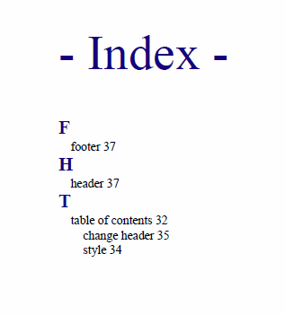
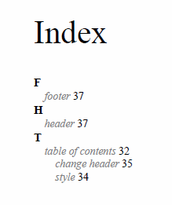
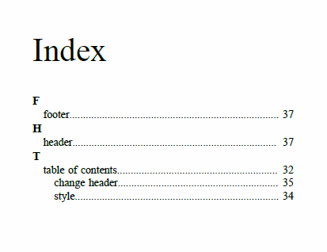
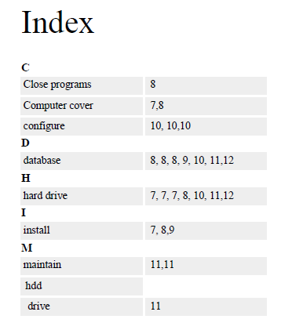

Index
The content of an <indexterm> element is used to produce an index
entry in the generated index. You can nest <indexterm> elements to
create multi-level indexes. The content is not output as part of the topic content, only as
part of the index tree.
To add an index to your publication, you just need to add <indexterm>
elements inside the <prolog> section (inside a
<metadata> element):
<title>The topic title.</title>
<prolog>
<metadata>
<keywords>
<indexterm>Installing <indexterm>Water Pump</indexterm></indexterm>
</keywords>
</metadata>
</prolog>
<body>
.....
or in the content itself:
... <p>Open the lid then turn the body pump to the right. <indexterm>Installing <indexterm>Water Pump</indexterm></indexterm> </p> ...
If you are using a bookmap, you need to specify where the index list should be presented (for
instance in the backmatter of the book. Technically, it is possible to also add it to
the frontmatter, but this is unusual). This is done using an
<indexlist> element in the <booklists> element
(inside the <backmatter>):
<bookmap>
...
<chapter href="tasks/troubleshooting.dita">
...
</chapter>
<backmatter>
<booklists>
<indexlist/>
</booklists>
</backmatter>
</bookmap>
For plain maps, the index list is automatically added at the end of the publication, with no need to modify the map.
Index - XML Fragment
In the merged
map file, the structure that holds the index tree is the
<opentopic-index:index.groups> element.
<map class="- map/map " > <oxy:front-page> ... </oxy:front-page> <opentopic:map xmlns:opentopic="http://www.idiominc.com/opentopic"> ... </opentopic:map> <topic class="- topic/topic "> <title class="- topic/title ">Request Support</title> ... </topic> <opentopic-index:index.groups id="d16e5548"> ... </opentopic-index:index.groups> </map>
- A label, the starting letter ("T" in the following example).
- A tree of
<opentopic-index:index.entry>elements.
<opentopic-index:index.group> <opentopic-index:label>T</opentopic-index:label> <opentopic-index:index.entry value="table of contents"> <opentopic-index:formatted-value>table of contents</opentopic-index:formatted-value> <opentopic-index:refID value="table of contents:"> <oxy:index-link xmlns:oxy="http://www.oxygenxml.com/extensions/author" href="#d16e3988"> [d16e3988] </oxy:index-link> </opentopic-index:refID> <opentopic-index:index.entry value="change header"> <opentopic-index:formatted-value>change header</opentopic-index:formatted-value> <opentopic-index:refID value="table of contents:change header:"> <oxy:index-link xmlns:oxy="http://www.oxygenxml.com/extensions/author" href="#d16e4176"> [d16e4176] </oxy:index-link> </opentopic-index:refID> </opentopic-index:index.entry> <opentopic-index:index.entry value="style"> <opentopic-index:formatted-value>style</opentopic-index:formatted-value> <opentopic-index:refID value="table of contents:style:"> <oxy:index-link xmlns:oxy="http://www.oxygenxml.com/extensions/author" href="#d16e4120"> [d16e4120] </oxy:index-link> </opentopic-index:refID> </opentopic-index:index.entry> </opentopic-index:index.entry> </opentopic-index:index.group>
- The formatted value (
<opentopic-index:formatted-value>). - A link to the publication content
(
<opentopic-index:refID>/<oxy:index-link>). - Possibly other child entries.
For the DITA Map PDF - based on HTML5 & CSS
transformation type, the merged map is further processed resulting in a collection
of HTML5 <div> elements. These elements preserve the
original DITA @class attribute values and add a new value derived
from the DITA element name.
<div class="- map/map map" > <div class="front-page/front-page"> ... </div> <div class="toc/toc toc"> ... </div> <div class="- topic/topic topic"> <div class="- topic/title title">Request Support</title> ... </div> <div class=" index/groups groups"> ... </div> </map>The index group content becomes:
<div class=" index/group group"> <div class=" index/label label">T</div> <div class=" index/entry entry"> <div class=" index/formatted-value formatted-value">table of contents</div> <div class=" index/refid refid"> <div class=" index/link link" href="#d16e3988"> [d16e3988] </div> </div> <div class=" index/entry entry"> <div class=" index/formatted-value formatted-value">change header</div> <div class=" index/refid refid"> <div class=" index/link link" href="#d16e4176"> [d16e4176] </div> </div> </div> <div class=" index/entry entry"> <div class=" index/formatted-value formatted-value">style</div> <div class=" index/refid refid"> <div class=" index/link link" href="#d16e4120"> [d16e4120] </div> </div> </div> </div> </div>
Index - Built-in CSS
All index styling is found in: [PLUGIN_DIR]css/print/p-index.css.
How to Style the Index Page Title and the Grouping Letters
In your customization CSS, add the following CSS rules:
*[class ~= "index/groups"] *[class ~= "index/group"] *[class ~= "index/label"] { font-size:1.5em; color:navy; } *[class ~= "index/groups"]:before { content: "- Index - "; color:navy; font-size: 4em; }

How to Style the Index Terms Labels
In your customization CSS, add the following CSS rule:
*[class ~= 'index/groups'] *[class ~= 'index/formatted-value'] { font-style:oblique; color:gray; }

How to Add Filling Dots Between the Index Labels and the Page Numbers
Suppose you want the leader CSS content to generate a row of dots. It is necessary that the parent entry has the text justified.
In your customization CSS, add the following CSS rule:
*[class~="index/formatted-value"], *[class~="index/refid"] { display:inline; } /* Hide the sequences of links that actually do not contain links. */ *[class~="index/group"] *[class ~= "index/entry"] > *[class~="index/refid"]{ display:none; } *[class~="index/group"] *[class ~= "index/entry"] > *[class~="index/refid"]:has(*[class~="index/link"]){ display:inline; } *[class~="index/group"] *[class~="index/entry"] { text-align:justify; } *[class~="index/group"] *[class ~= "index/entry"] > *[class~="index/refid"]:before{ content:leader('.'); }
The output now contains the dots:
How to Change the Index Page Number Format and Reset its Value
The page number is reset at the beginning of the index page by the built-in CSS rule:
*[class ~= "index/groups"] { counter-reset: page 1; }
If you want to start the page counter from a different initial number, just change the value of this counter. For example, to continue the normal page counting, use:
*[class ~= "index/groups"] {
counter-reset: none;
}
If you need to style the page number differently (for example, using decimals), add the following CSS rule in your customization CSS:
@page index {
@bottom-center { content: counter(page, decimal) }
}
How to Impose a Table-like Index Layout
In case you need to place the index labels and links on the same line but with some extra alignment constraints, you can use inline blocks to give the index a table-like appearance:
- index/formatted-value
- This is the text of the index term.
- index/refid
- This element contains a list of links.
A fixed width is used for the formatted value and the links container (almost half of the available width). To achieve the index hierarchical layout, set progressive padding to the formatted value text.
In your customization CSS, add the following CSS rule:
*[class~="index/formatted-value"], *[class~="index/refid"]{ display:inline-block; } *[class~="index/formatted-value"]{ width:45%; } *[class~="index/refid"] { width:45%; } /* Hide the sequences of links that actually do not contain links. */ *[class ~= "index/groups"] *[class ~= "index/entry"] > *[class~="index/refid"]{ display:none; } *[class ~= "index/groups"] *[class ~= "index/entry"] > *[class~="index/refid"]:has(*[class~="index/link"]){ display:inline-block; } /* Move the nesting of indexterms from margin to padding */ *[class ~= "index/groups"] *[class ~= "index/entry"] { margin-left: 0; } *[class ~= "index/groups"] *[class ~= "index/entry"] *[class~="index/formatted-value"]{ padding-left: 0.2em; } *[class ~= "index/groups"] *[class ~= "index/entry"] *[class ~= "index/entry"] *[class~="index/formatted-value"]{ padding-left: 0.4em; } *[class ~= "index/groups"] *[class ~= "index/entry"] *[class ~= "index/entry"] *[class ~= "index/entry"] *[class~="index/formatted-value"]{ padding-left: 0.6em; } /* Some styling */ *[class~="index/formatted-value"], *[class~="index/refid"]{ padding:0.2em; background-color:#EEEEEE; }
To avoid bleeding of the index term label, you may need to mark it as being hyphenated:
*[class~="index/formatted-value"] {
hyphens:auto;
}To
activate hyphenation, see: How to Enable Hyphenation for Entire Map.